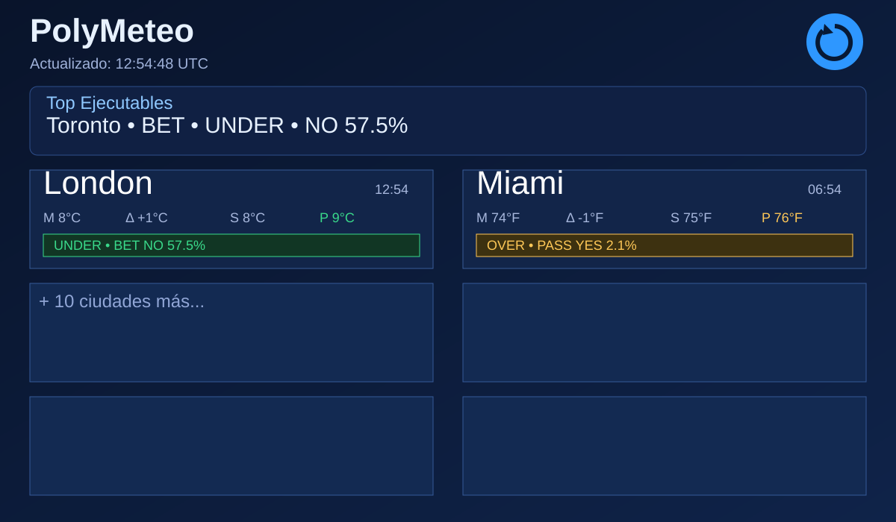
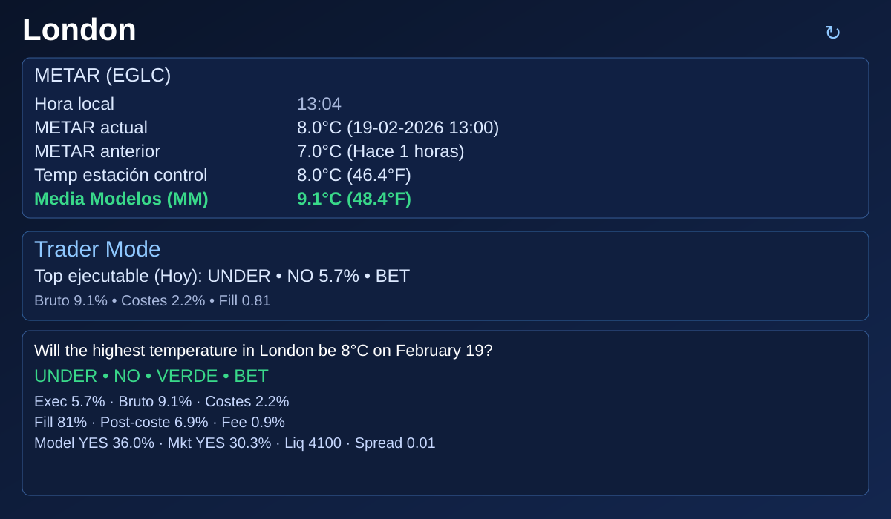
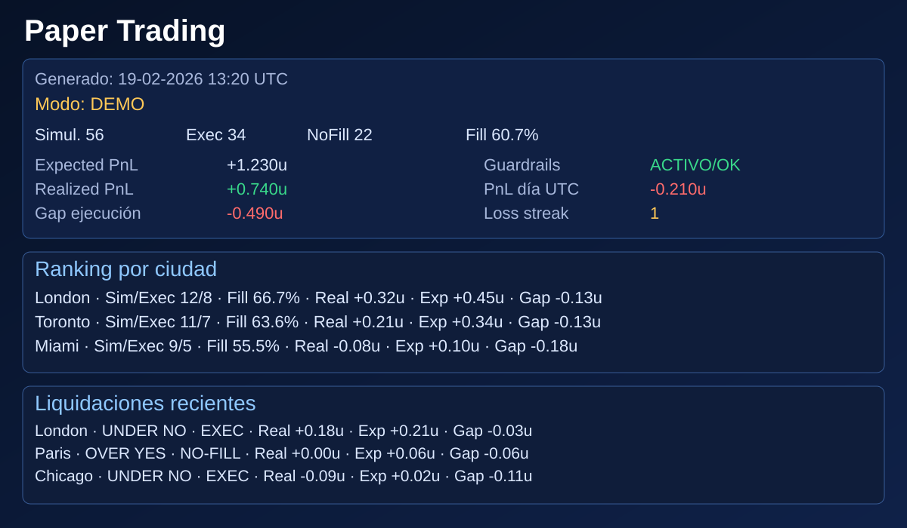

Guía exhaustiva para personas sin experiencia previa en apuestas, mercados de predicción ni trading. Diseñada para pasar de cero conocimiento a decisiones más rigurosas y controladas.
Enfoque didáctico Riesgo controlado Ejemplo real: Londres
39°C en lugar de ~4°C). El parser embedded ahora prioriza unidad imperial por defecto cuando la unidad no viene explícita.render.functional.yaml), guía operativa paso a paso y soporte de ruta persistente configurable para estado Web Push (POLYMETEO_WEBPUSH_STATE_FILE).POLYMARKET_WALLET_ADDRESS (entorno / local.properties) a través del backend..tmp + rename) y flush real en shutdown para proteger suscripciones y auditoría.curl./api/v1/webpush/subscriptions y /api/v1/webpush/audit)./api/v1/webpush/*) y puede monitorizar CopyTrade server-side si dispone de VAPID configurado.localhost funciona como entorno seguro de prueba; en producción requiere HTTPS (ya previsto para polymeteo.caplatemp.xyz).localStorage), apertura de operaciones desde los mercados del DETALLE (Simular BUY YES/NO), marcado a mercado y cierre manual con PnL abierto/cerrado visible./api/v1/user-intel) para consultar actividad/trades públicos, perfil (proxy wallet) e insights de estilo operativos (foco meteo, BUY/SELL, top ciudades/eventos) sin exponer CORS ni lógica al navegador.strategyEligible) sobre el mismo motor real.MOCK, preservando la semántica (MM/MMA, horizontes, trazabilidad, Rookie/Experto) mientras se prepara la integración real.Render + DNS + SSL) antes de construir la web funcional con datos en tiempo real.Vol. de Polymarket) por separado.@usuario, resolver su proxy wallet pública y consultar actividad/trades/posiciones públicos con insights operativos (solo informativo, sin alterar cálculos de la app).POST_NOTIFICATIONS está concedido).POST_NOTIFICATIONS (Android 13+) para poder mostrar alertas del sistema de CopyTrade.Top Ejecutables ahora es un ticker horizontal dinámico (estilo cotizaciones) con información útil en tiempo real.[M], [P], [MP], [HM], [HP] o [HMP] junto al nombre para indicar en qué días hay oportunidades (Hoy/Mañana/Pasado).New York (Mañana)).FLASH en rojo parpadeante durante 1 minuto para priorizar revisión inmediata.Media Modelos Ajustada (MMA) muestra valor numérico (no solo enlace) y abre su dashboard al pulsar en etiqueta o valor.Hoy/Mañana/Pasado) para evitar confusiones cuando no hay oportunidades en Hoy.METAR actual con fecha/hora y METAR anterior con (Hace X horas).TAF con resumen, vigencia e incidencias relevantes.TAF es clicable y explica uso práctico para principiantes.TAF: pronóstico oficial de aeródromo para entender régimen esperado de nubes, visibilidad, viento y cambios.Edge ejecutable mínimo de 20%.Liquidez mínima aproximada de 1200.Importante: FLASH no es “compra obligatoria”. Es un aviso de prioridad para revisar en DETALLE antes de decidir.
Imagina que compras una apuesta tipo: “Sí, gana el Madrid” a 0.60.
Ese precio significa que el mercado “cree” aproximadamente en un 60% de probabilidad.
En PolyMeteo no decides “a ojo”: usas datos meteorológicos para detectar cuándo el precio de mercado puede estar mal ajustado.
Precio del contrato ≈ probabilidad que el mercado está asignando. Ejemplo: precio 0.35 ≈ 35%.
Si tu modelo estima 48% y el mercado marca 35%, existe una ventaja potencial. Si además los costes y la ejecución lo permiten, se convierte en ventaja operable.
El edge bruto es teórico. El edge ejecutable descuenta fricción real del mercado.
Polymarket es un mercado de predicción donde se negocian probabilidades. En esta app se trabaja el mercado de temperatura máxima diaria por ciudad.
Ruta básica (día 1)Ruta avanzada (día 7+)

| Campo | Qué significa | Por qué es valioso | Cómo usarlo |
|---|---|---|---|
Actualizado | Hora de último refresh global. | Evita decidir con datos viejos. | Si está desactualizado, refresca. |
Ticker dinámico | Línea móvil con oportunidades y estado global (ejecutables, tops, alertas y errores). | Reduce ruido sin perder contexto. | Lee primero el ticker para priorizar en qué ciudad entrar a DETALLE. |
FLASH | Etiqueta roja parpadeante durante 1 minuto cuando hay oportunidad fuerte y ejecutable. | Sirve de alerta temprana para no llegar tarde. | No entres por impulso: úsalo para abrir DETALLE y validar costes/fill. |
(Mañana) / (Pasado) en ticker | Etiqueta de horizonte de la oportunidad mostrada en ticker/FLASH. | Evita confundir una oportunidad futura con una de hoy. | Si no pone nada tras la ciudad, la oportunidad es de Hoy. |
M | METAR actual. | Pulso real y oficial del aeropuerto. | Compáralo con Media Modelos (MM) y estación. |
Δ | Cambio vs METAR anterior. | Momentum térmico inmediato. | Delta alta puede invalidar tesis vieja. |
S | Estación control (Wunderground). | Dato de referencia para validación. | Si S y M divergen mucho, cautela. |
P | Media Modelos (MM) (consenso modelos). | Visión agregada más robusta. | Base para trader mode. |
[M], [P], [MP], [HMP] | Horizontes con oportunidades en esa ciudad: Hoy (H), Mañana (M), Pasado (P). | Te dice si el chip visible del grid puede referirse a otro día distinto de Hoy. | Si solo hay Hoy, no se muestra etiqueta (comportamiento normal). |
| Chip trader | Dirección + BET/PASS + lado + edge ejecutable. | Resume oportunidad real. | BET no significa “obligatorio”; valida detalle. |
Ejemplo: FLASH London (Mañana) UNDER NO 57.5% • Ejecutables 5/14 • 1 Seoul OVER BET YES 22.4% • 2 New York (Pasado) RANGE BET YES 18.1% • Fuentes con error: 2
FLASH ...: prioridad alta de revisión inmediata.(Mañana) / (Pasado) tras la ciudad: la oportunidad destacada no es de hoy.Ejecutables 5/14: cuántas ciudades tienen top opportunity operable ahora.1 Seoul ...: ranking de las mejores oportunidades del momento.Fuentes con error: 2: calidad de datos; si sube, aumenta prudencia.| Etiqueta | Significado | Lectura práctica |
|---|---|---|
| (sin etiqueta) | Solo hay oportunidad en Hoy (o no hay oportunidades futuras seleccionadas). | El chip visible del grid se interpreta como horizonte actual. |
[M] | Hay oportunidades en Mañana. | Si el chip del grid parece raro respecto a Hoy, entra en DETALLE y revisa la pestaña Mañana. |
[P] | Hay oportunidades en Pasado (pasado mañana). | Señal de valor futuro; no confundir con operativa de hoy. |
[MP] | Hay oportunidades en Mañana y Pasado. | Muy útil cuando Hoy está filtrado pero el motor sí ve valor en horizontes futuros. |
[HM], [HP], [HMP] | Combinaciones de oportunidades en varios horizontes. | La ciudad tiene valor en más de un día; usa las pestañas para separar análisis. |

| Campo | Qué es | Qué te aporta |
|---|---|---|
METAR actual | Temperatura observada más reciente + fecha/hora local de observación. | Te confirma exactamente qué dato estás usando y cuándo se tomó. |
METAR anterior (Hace X horas) | Lectura previa del día. | Permite medir aceleración/estabilidad. |
Diferencia | Actual - anterior. | Si cambia fuerte, puede romper una tesis. |
Temp estación control | Máxima actual acumulada del día con unidad principal + unidad alternativa. | Clave para resolver mercados diarios sin errores de escala C/F. |
Media Modelos (MM) | Consenso de modelos forecast (sin aprendizaje dinámico), resaltado en verde. | Punto de referencia base para comparar con mercado. |
Media Modelos Ajustada (MMA) | Estimación con aprendizaje diario por ciudad/modelo; valor numérico clicable. | Estimación adaptativa que debe mejorar con historial de verificación. |
TAF emitido y TAF vigencia | Momento de emisión y ventana temporal válida del TAF. | Te ayuda a detectar si el escenario esperado cambia durante el día del mercado. |
TAF resumen | Resumen automático de riesgos/cambios (ej. TEMPO/BECMG, visibilidad, tormenta). | Contexto rápido para validar o invalidar tesis OVER/UNDER. |
Fuente METAR, Fuente TAF y Fuente estación | Etiquetas clicables con acción Abrir (sin mostrar URL larga en pantalla). | Auditoría y verificación directa sin ensuciar la lectura. |
Cada fila muestra Fuente, Now, Max, Estado.
Si una API falla, se muestra explícitamente. Esto evita “falsas certezas”.
Hoy / Mañana / Pasado: cambia horizonte del mercado.Top ejecutable: la mejor idea del horizonte seleccionado.Calibración local activa: ajusta incertidumbre por ciudad/franja/horizonte.OVER/UNDER/RANGE, YES/NO, BET/PASS, EXEC, COSTES, FILL, etc.).OVER/UNDER/RANGE: define la tesis meteorológica.YES/NO: lado recomendado del mercado.VERDE/AMARILLO/BAJO: calidad de oportunidad.BET/PASS: decisión final operable del motor.Exec + Bruto + Costes + Fill: filtro de ejecución real.Esto es normal y está hecho a propósito. Polymarket muestra mercados activos, pero la app solo muestra mercados que pasan filtros de calidad y ejecución. Es decir: la app no pregunta “¿está abierto?” sino “¿tiene sentido entrar ahora?”.
18:00 o más, la app marca CERRADO POR HORARIO.| Término | Qué significa “en la calle” | Qué te dice |
|---|---|---|
Bruto | Ventaja teórica antes de pagar peajes. | Si ya es bajo aquí, mala señal de partida. |
Costes | Peajes de operar (fee + spread + liquidez). | Cuánto se te “come” el mercado por entrar/salir. |
Fill | Probabilidad de que te ejecuten bien. | Si es bajo, puedes quedarte sin entrar o entrar peor. |
Exec | Ventaja real final (la importante). | Es la que decide si hay BET o PASS. |
BET / PASS | Apta / no apta según el motor. | PASS no significa “mercado cerrado”, significa “no merece entrada ahora”. |
Vol. en la fila).
Si Polymarket muestra solo los botones Comprar Sí y Comprar No, puedes estimar el spread así:
spread ≈ precio Comprar Sí + precio Comprar No - 151c y 58c → 0.51 + 0.58 - 1 = 0.09 → spread 9c.
Importante: el texto verde pequeño tipo Sí 2.4 · 42c o Sí 9.8 · 51c es tu
posición (beneficio potencial + precio medio comprado), no son precios de libro
(bid/ask) del mercado.
| Bucket | Comprar Sí | Comprar No | Spread aprox. | Resultado típico en la app | Por qué |
|---|---|---|---|---|---|
14°C |
51c |
58c |
9c |
Puede salir o no según Exec/Fill/Costes |
No cae por spread duro (9c <= 12c), pero puede caer por edge ejecutable/fill. |
15°C |
51c |
58c |
9c |
Igual que 14°C: depende de ejecución real | Pasa spread duro, pero si Exec es bajo o Fill cae, se marca PASS. |
16°C |
18.9c |
97.4c |
16.3c |
Normalmente no aparece | Cae por spread demasiado alto (16.3c > 12c, filtro duro). |
Hay dos capas de límites: (1) filtros duros del motor y (2) filtros de estrategia (Conservadora/Agresiva, sobre todo en modo Rookie). Primero deben pasar los filtros duros. Después, la estrategia puede endurecer aún más la selección.
| Regla | Límite actual | Qué significa en lenguaje simple |
|---|---|---|
| Horario de ciudad | >= 18:00 local | La ciudad se cierra en la app aunque Polymarket siga activo. |
Señal base (shouldTrade) | Exec >= 2.0% y Fill >= 50% | Primera criba: si no pasa, ni se considera operable. |
| Liquidez mínima | 250 | Evita libros demasiado vacíos. |
| Volumen 24h mínimo | 200 | Evita mercados sin actividad real. |
| Spread máximo | 12c (0.12) | Si el peaje de entrada es muy alto, se descarta. |
| Costes totales máximos | 22% | Si fee+spread+liquidez comen demasiado, fuera. |
| Fill mínimo (control ejecución) | 55% | Aunque el edge sea bueno, si es difícil ejecutar, se descarta. |
| Edge ejecutable mínimo (hoy, antes de 15:00) | 2.5% | Ventaja mínima real para que merezca la pena. |
| Edge ejecutable mínimo (hoy, desde 15:00) | 3.5% | Se exige más tarde para evitar entradas con poco tiempo de reacción. |
| Precio de entrada permitido | 2c a 90c | Evita entrar en precios extremos donde la ejecución suele ser mala. |
| Dominancia (desde 13:00 local) | YES >= 95% | Si el libro ya está casi resuelto, el motor suprime oportunidades útiles. |
| Viabilidad física (máxima observada truncada) | Debe seguir siendo posible | Si ya se ha visto una máxima que invalida el bucket, se elimina automáticamente. |
Estos límites se aplican después de pasar los filtros duros. Sirven para decidir cuántas oportunidades mostrar a un usuario novato.
| Regla | Conservadora | Agresiva | Lectura práctica |
|---|---|---|---|
| Señal base | shouldTrade = true | shouldTrade = true | Las dos exigen que el motor base diga que hay opción real. |
| Semáforo | VERDE | VERDE o AMARILLO (no rojo) | Conservadora es mucho más selectiva. |
| Exec mínimo | 7% | 3% | Conservadora pide ventaja real más alta. |
| Fill mínimo | 72% | 55% | Conservadora exige mejor probabilidad de ejecución. |
| Liquidez mínima | 1200 | 300 | Agresiva acepta libros más finos. |
| Spread máximo propio | 8c (0.08) | Sin límite propio (pero sí rige el duro de 12c) | Por eso algo puede pasar el motor y aun así no salir en Conservadora. |
| Costes máximos | 17% | 21% | Agresiva tolera más fricción. |

¿La ventaja esperada se convierte en resultado real cuando incluyes fricciones de mercado?
| Métrica | Interpretación | Decisión sugerida |
|---|---|---|
Simul. / Exec / NoFill | Cuántos trades se simulan y cuántos se llegan a ejecutar. | Si NoFill alto, reduce ambición de entrada. |
Fill | Ratio de ejecución. | Si cae, evita mercados pobres en liquidez. |
Expected PnL | Resultado esperado por modelo + ejecución simulada. | Referencia teórica. |
Realized PnL | Resultado realmente logrado en simulación. | Métrica de verdad operativa. |
Gap ejecución | Realized - Expected. | Si es negativo crónico, mejora ejecución o filtra mercados. |
Guardrails | Estado de límites de riesgo. | Si kill-switch ON, parar nuevas entradas. |
Acción recomendada: no abrir trade nuevo hasta confirmar con siguiente refresh y estación control.
Es una “comisión invisible”: aunque aciertes la dirección, puedes perder valor en ejecución. Guardrails deben bloquear este tipo de entrada.
DEMO MODE existe para probar rápido el sistema de riesgo. No es para estimar rentabilidad real final.
Modo REAL: deja operar con límites normales. Modo DEMO: aprieta los límites para que veas bloqueos antes y entiendas el riesgo sin sobreexponerte.
| Aspecto | Modo normal (REAL) | DEMO MODE |
|---|---|---|
| Objetivo | Operación y evaluación realista. | Forzar pruebas de bloqueos y kill-switch. |
| Máx. trades/día | 24 | 3 |
| Máx. stake diario | 10.00 u | 1.20 u |
| Máx. pérdida diaria | 2.25 u | 0.55 u |
| Máx. pérdida por mercado | 0.90 u | 0.28 u |
| Liquidez mínima | 900 | 2200 |
| Spread máximo | 4.5% | 2.2% |
| Racha de pérdidas para bloqueo | 4 | 2 |
| Probabilidad de ver bloqueos | Moderada. | Alta (intencional). |
| Uso recomendado | Seguimiento continuo. | QA/validación funcional del sistema de riesgo. |
| Etiqueta en app | Modo: REAL | Modo: DEMO |
local.properties, pon DEMO_MODE=true.Modo: DEMO.DEMO_MODE=false y recompilar.Información financiera y prevención de riesgos: CNMV. Juego responsable: DGOJ / Juego Seguro.
| Término | Definición simple | Ejemplo rápido |
|---|---|---|
| Actualizado | Hora de la última carga de datos. | Si fue hace mucho, refresca antes de decidir. |
| BET | Señal de “puede merecer entrada”. | BET + fill alto + costes bajos = mejor contexto. |
| Brier | Calidad de probabilidades (más bajo = mejor). | 0.12 suele ser mejor que 0.22. |
| Calibración local | Ajuste por ciudad/hora/horizonte. | Londres tarde no se comporta igual que Miami mañana. |
| Costes | Fricción de ejecución (fee+spread+liquidez). | Si suben, edge ejecutable baja. |
| DEMO MODE | Modo de pruebas con límites más duros. | Útil para verificar guardrails rápidamente. |
| Edge | Ventaja entre tu estimación y el mercado. | Mercado 50% y modelo 60% = edge ~10% bruto. |
| Edge bruto | Ventaja teórica sin costes. | Parece buena idea, pero aún no es operable. |
| Edge ejecutable | Ventaja real tras costes y fill. | Es el número que importa para operar. |
| EXEC | Trade que sí se ejecutó en simulación. | Cuenta para stake, PnL y hit-rate. |
| Expected PnL | Ganancia esperada por modelo. | Referencia teórica para comparar. |
| FLASH | Alerta visual temporal de oportunidad fuerte y ejecutable. | Prioriza revisión en DETALLE antes de actuar. |
| Fill | Probabilidad de ejecución. | Fill 30% = muchas órdenes podrían no entrar. |
| Fill-rate | % de simulados que se ejecutan. | Exec 30 / Simul 50 = 60% fill-rate. |
| Gap ejecución | Realized - Expected. | Si es negativo repetido, hay problema de ejecución. |
| Guardrails | Límites automáticos de riesgo. | Bloquean entradas peligrosas. |
| Hit-rate | % aciertos en trades ejecutados. | 6 aciertos de 10 ejecutados = 60%. |
| Kill-switch | Bloqueo total automático. | Se activa tras pérdida/racha crítica. |
| Liquidez (Liq) | Facilidad de entrar/salir sin mover precio. | Baja liquidez suele empeorar ejecución. |
| Log-loss | Métrica que castiga exceso de confianza equivocada. | Más bajo = mejor calibración probabilística. |
| METAR | Observación aeronáutica del aeropuerto. | Dato clave “en tiempo real”. |
| NoFill | Trade simulado que no ejecutó. | No arriesga stake, pero reduce oportunidad capturada. |
| PASS | Señal de no entrar. | Mejor pasar que entrar por ansiedad. |
| Paper Trading | Simulación sin dinero real. | Entrenar antes de operar de verdad. |
| PnL | Ganancia/pérdida. | +0.15u ganó; -0.10u perdió. |
| Media Modelos (MM) | Consenso de máximas de varios modelos. | Base central para probabilidades. |
| Media Modelos Ajustada (MMA) | Estimación con aprendizaje diario por ciudad y ranking vivo de modelos. | Debe mejorar gradualmente la precisión local frente al Media Modelos (MM) base. |
| Probabilidad implícita | Probabilidad que “dice” el precio. | Precio 0.42 ≈ 42%. |
| Realized PnL | Resultado real obtenido. | Puede ser menor al esperado por ejecución. |
| RANGE | Tesis de intervalo. | “Entre 8 y 10°C”. |
| ROI | Rentabilidad sobre stake. | PnL 1.0 con stake 10 = 10% ROI. |
| Spread | Diferencia entre mejor compra y mejor venta. | Spread alto = entrada más cara. |
| Stake | Coste de abrir posición. | Si compras a 0.36, stake es 0.36 por unidad. |
| TAF | Pronóstico aeronáutico oficial de aeropuerto para próximas horas. | Ayuda a validar si la tesis térmica tiene continuidad o riesgo de giro. |
| Ticker dinámico | Línea horizontal móvil con resumen de oportunidades y estado de fuentes. | Sirve para priorizar ciudades sin abrir detalle de todas. |
| UNDER | Tesis de máxima por debajo del umbral. | Comprar NO en umbral alto puede equivaler a tesis UNDER. |
| OVER | Tesis de máxima por encima del umbral. | Útil en días de calentamiento sostenido. |
| YES/NO | Lado del contrato comprado. | YES apuesta a que condición se cumple; NO a que no. |
Recomendación: grabar 3 videos internos de 60-90 segundos para onboarding.
Nota: sustituir estos enlaces por videos propios del proyecto cuando estén disponibles.
Manual v4.14 • Última actualización: 25-02-2026 • Feedback: digitalclaw8@gmail.com